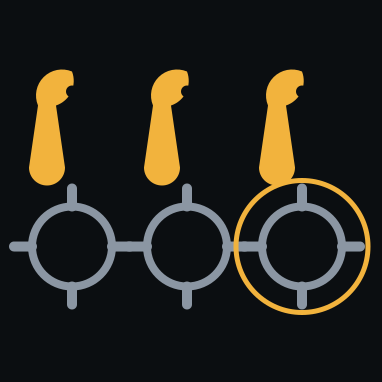
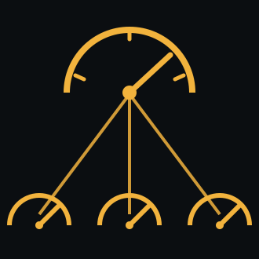
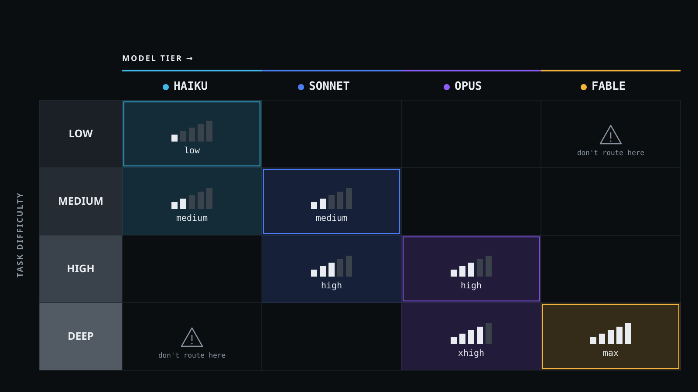
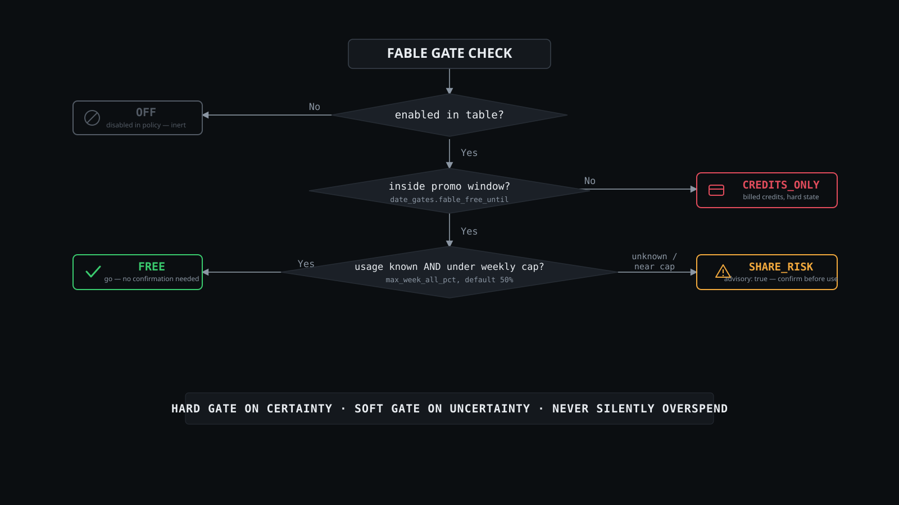

<!doctype html>
<html lang="en">
<head>
<meta charset="utf-8"/>
<meta name="viewport" content="width=device-width, initial-scale=1"/>
<title>Frontier Model Use Efficiency</title>
<style>
/* ============================================================
   Frontier Model Use Efficiency — deck
   Palette + type per 05_design_system.md. No network requests:
   fonts are local-or-fallback stacks so nothing can hang on
   venue wifi mid-talk.
   ============================================================ */
:root{
  /* §2.1 base */
  --black:#0B0E11; --panel:#14181D; --raised:#1B2027;
  --hair:#262C34; --stroke:#3A424C;
  /* §2.2 text */
  --text:#E9EDF1; --mut:#8B96A3; --ghost:#525A64; --green:#4FE0A0;
  /* §2.3 tiers */
  --haiku:#3DB8E8; --sonnet:#4C7CF0; --opus:#8B5CF6; --fable:#F2B33D;
  --ext:#6B7280;
  /* §2.4 gate states */
  --free:#3ACB6E; --risk:#F2A93D; --credits:#E24C5C; --off:#525A64;
  --sans:'IBM Plex Sans','Segoe UI',system-ui,-apple-system,sans-serif;
  --mono:'JetBrains Mono','Cascadia Mono',Consolas,ui-monospace,monospace;
}
*{box-sizing:border-box;margin:0;padding:0}
html,body{height:100%;background:#000;overflow:hidden;font-family:var(--sans);color:var(--text)}
#viewport{position:fixed;inset:0;display:flex;align-items:center;justify-content:center;background:#000}
#stage{position:relative;width:1280px;height:720px;transform-origin:center center;
  background:var(--black);overflow:hidden}

/* ---- slide shell: 6% safe margin (§7) ---- */
.slide{position:absolute;inset:0;padding:44px 76px;display:none;flex-direction:column;justify-content:center}
.slide.active{display:flex;animation:fade .28s ease}
.slide.full{padding:0;justify-content:stretch}
.slide.pad0{padding:34px 56px}
@keyframes fade{from{opacity:0}to{opacity:1}}

/* ---- type ---- */
.kicker{font-family:var(--mono);font-size:15px;color:var(--mut);margin-bottom:16px;letter-spacing:.02em}
h1{font-weight:600;line-height:1.06;letter-spacing:-.6px}
.xl{font-size:66px;font-weight:700}
.lg{font-size:46px}
.md{font-size:36px}
.sm{font-size:28px}
.sub{font-size:23px;color:var(--mut);margin-top:14px;line-height:1.45;font-weight:400}
.meta{position:absolute;left:76px;bottom:38px;font-family:var(--mono);font-size:14px;color:var(--ghost)}
.lead{font-size:24px;line-height:1.5;margin-top:22px;max-width:1000px}
.lead b{font-weight:600;color:#fff}
em{color:var(--text);font-style:italic}

/* ---- bullets ---- */
ul.b{list-style:none;margin-top:26px;display:flex;flex-direction:column;gap:15px;max-width:1060px}
ul.b li{position:relative;padding-left:24px;font-size:22px;line-height:1.44;color:var(--text)}
ul.b li:before{content:"";position:absolute;left:0;top:11px;width:7px;height:7px;background:var(--stroke)}
ul.b li.m{color:var(--mut);font-size:20px}
ul.b.tight li{font-size:20px;line-height:1.4}

/* ---- §6 status pill: the one recurring component ---- */
.pill{display:inline-flex;align-items:center;gap:7px;border:1px solid var(--stroke);
  border-radius:999px;padding:4px 12px 4px 9px;font-family:var(--sans);font-weight:600;
  font-size:13px;letter-spacing:.06em;text-transform:uppercase;color:var(--text);white-space:nowrap}
.pill i{width:6px;height:6px;border-radius:50%;background:var(--mut);flex:none}
.pill.haiku i{background:var(--haiku)} .pill.haiku{border-color:var(--haiku)}
.pill.sonnet i{background:var(--sonnet)} .pill.sonnet{border-color:var(--sonnet)}
.pill.opus i{background:var(--opus)} .pill.opus{border-color:var(--opus)}
.pill.fable i{background:var(--fable)} .pill.fable{border-color:var(--fable)}
.pill.ext i{background:var(--ext)} .pill.ext{border-color:var(--ext)}
.pill.free i{background:var(--free)} .pill.free{border-color:var(--free)}
.pill.risk i{background:var(--risk)} .pill.risk{border-color:var(--risk)}
.pill.credits i{background:var(--credits)} .pill.credits{border-color:var(--credits)}
.pill.off i{background:var(--off)} .pill.off{border-color:var(--off);color:var(--ghost)}
.pillrow{display:flex;gap:10px;flex-wrap:wrap;align-items:center}

/* ---- §6 mono chip: anything literal ---- */
code,.chip{font-family:var(--mono);font-size:.88em;background:var(--panel);
  border:1px solid var(--hair);border-radius:4px;padding:2px 7px;color:var(--text)}

/* ---- §4D comparison table ---- */
table{width:100%;border-collapse:collapse;margin-top:24px;font-size:19px}
th{background:var(--raised);font-weight:600;text-align:left;padding:12px 16px;
  border-bottom:2px solid var(--stroke);font-size:17px}
td{padding:11px 16px;border-bottom:1px solid var(--hair);vertical-align:middle;line-height:1.35}
tr:nth-child(even) td{background:var(--panel)}
td.num{text-align:right;font-family:var(--mono)}
td .pill{font-size:12px}

/* ---- §4C terminal panel ---- */
.term{background:var(--black);border:1px solid var(--hair);border-radius:6px;overflow:hidden;
  display:flex;flex-direction:column}
.term .bar{background:var(--raised);height:34px;display:flex;align-items:center;gap:7px;
  padding:0 14px;border-bottom:1px solid var(--hair);flex:none}
.term .bar u{width:8px;height:8px;border-radius:50%;background:var(--stroke);display:block}
.term .bar span{font-family:var(--mono);font-size:13px;color:var(--mut);margin-left:12px}
.term .body{padding:16px 20px;font-family:var(--mono);font-size:17px;line-height:1.62;
  color:var(--mut);white-space:pre-wrap;overflow:hidden;flex:1}
.term .body .p{color:var(--green)}
.term .body .c{color:var(--text)}
.term .body .f{color:var(--sonnet)}
.term .body .hi{color:var(--text);background:var(--panel)}
.g-free{color:var(--free)} .g-risk{color:var(--risk)} .g-cred{color:var(--credits)} .g-off{color:var(--off)}
.t-haiku{color:var(--haiku)} .t-sonnet{color:var(--sonnet)} .t-opus{color:var(--opus)} .t-fable{color:var(--fable)}
/* external providers (Codex / local) get the neutral --ext slate per design system §2.3 —
   never a gate-state color, or an active route reads as "disabled" */
.t-ext{color:var(--ext)}
.undertext{margin-top:14px;font-size:19px;color:var(--mut);line-height:1.4}

/* ---- LIVE badge for demo slides ---- */
.live{position:absolute;top:30px;right:76px;display:inline-flex;align-items:center;gap:8px;
  border:1px solid var(--credits);border-radius:999px;padding:5px 14px 5px 11px;
  font-size:12px;font-weight:600;letter-spacing:.14em;color:var(--credits);background:var(--black)}
.live i{width:7px;height:7px;border-radius:50%;background:var(--credits);animation:blip 1.6s infinite}
@keyframes blip{0%,100%{opacity:1}50%{opacity:.25}}

/* ---- §4B section header ---- */
.slide.sec{background:var(--panel)}
.sec .num{font-family:var(--mono);font-size:20px;color:var(--ghost);margin-bottom:20px}
.sec .goal{font-size:22px;color:var(--mut);margin-top:18px;max-width:900px;line-height:1.45}
.sec hr{border:0;border-top:1px solid var(--hair);margin-top:26px}

/* ---- §4E pull-quote ---- */
.quote{font-size:34px;line-height:1.34;font-weight:500;max-width:1030px;position:relative;padding-left:52px}
.quote:before{content:"#";position:absolute;left:0;top:-2px;font-family:var(--mono);
  font-size:44px;color:var(--stroke);font-weight:400}
.attr{font-family:var(--mono);font-size:16px;color:var(--mut);margin-top:26px;padding-left:52px}

/* ---- layout helpers ---- */
.cols{display:grid;gap:22px;margin-top:26px}
.c2{grid-template-columns:1fr 1fr}
.c3{grid-template-columns:repeat(3,1fr)}
.c4{grid-template-columns:repeat(4,1fr)}
.card{background:var(--panel);border:1px solid var(--hair);border-radius:6px;padding:18px 20px}
.card h4{font-size:19px;font-weight:600;margin-bottom:9px;line-height:1.3}
.card p{font-size:17px;color:var(--mut);line-height:1.42}
/* icons ship with their own #0B0E11 plate — bleed it edge-to-edge so it reads as
   an inset panel rather than a floating square on the lighter card fill */
.card .ic{height:104px;display:flex;align-items:center;justify-content:center;
  margin:-18px -20px 14px;border-bottom:1px solid var(--hair);background:var(--black)}
/* each icon's viewBox is a tight square around its own artwork, so the img is inset
   inside the plate to give the art breathing room rather than touching the edges */
.card .ic img{height:74px;width:74px}
.fill{width:100%;height:100%;object-fit:contain;display:block}

/* ---- ladder (slide 18) ---- */
.ladder{display:flex;flex-direction:column;gap:8px;margin-top:26px;max-width:860px}
.rung{display:flex;align-items:center;gap:16px;border:1px solid var(--hair);border-left:3px solid var(--stroke);
  background:var(--panel);padding:11px 18px;border-radius:4px;font-size:20px}
.rung b{font-family:var(--mono);font-size:15px;color:var(--ghost);width:26px;flex:none}
.rung.last{border-left-color:var(--credits);color:var(--mut)}
.rung.first{border-left-color:var(--free)}

/* ---- lifecycle (slide 22) ---- */
.track{display:flex;align-items:stretch;gap:0;margin-top:34px}
.stop{flex:1;border-top:2px solid var(--stroke);padding-top:20px;position:relative;padding-right:26px}
.stop:before{content:"";position:absolute;top:-6px;left:0;width:10px;height:10px;border-radius:50%;
  background:var(--black);border:2px solid var(--mut)}
.stop h4{font-size:21px;font-weight:600;margin-bottom:8px}
.stop p{font-size:16px;color:var(--mut);line-height:1.45}
.stop .sk{font-family:var(--mono);font-size:14px;color:var(--ext);margin-top:10px;display:block;line-height:1.6}

/* ---- CTA link chip (§4F) ---- */
.link{display:inline-block;font-family:var(--mono);font-size:22px;color:var(--text);
  border:1px solid var(--green);border-radius:999px;padding:11px 26px;margin-top:30px}

/* ---- HUD / chrome ---- */
#hud{position:fixed;right:14px;bottom:12px;font-family:var(--mono);font-size:12px;color:#4a5560;
  z-index:20;display:flex;gap:14px;align-items:center}
#hud b{font-weight:400;color:#6c7885}
#clock.behind{color:var(--credits)}
#clock.ok{color:var(--free)}
#bar{position:fixed;left:0;bottom:0;height:2px;background:var(--sonnet);z-index:20;transition:width .25s}
#notes{position:fixed;left:0;right:0;bottom:0;max-height:44vh;overflow:auto;background:#070A0D;
  border-top:1px solid var(--hair);padding:20px 30px 26px;display:none;z-index:30;
  font-size:15px;line-height:1.55;color:#c3ccd6}
#notes.show{display:block}
#notes h3{font-family:var(--mono);font-size:13px;color:var(--mut);margin-bottom:12px;font-weight:400}
#notes .hint{margin-top:16px;font-family:var(--mono);font-size:12px;color:var(--ghost)}
#notes b{color:#fff}
</style>
</head>
<body>
<div id="viewport"><div id="stage"></div></div>
<div id="bar"></div>
<div id="hud"><b id="seg"></b><span id="clock"></span><span id="pos"></span></div>
<div id="notes"></div>

<script>
/* ============================================================
   Slide model. Each entry: {seg, t (target start, sec), html, notes}
   Timings mirror 03_slide_by_slide_plan.md exactly and sum to 30:00.
   ============================================================ */

const P = {  /* reusable pill markup */
  haiku:'<span class="pill haiku"><i></i>Haiku</span>',
  sonnet:'<span class="pill sonnet"><i></i>Sonnet</span>',
  opus:'<span class="pill opus"><i></i>Opus</span>',
  fable:'<span class="pill fable"><i></i>Fable</span>',
  ext:'<span class="pill ext"><i></i>Codex</span>'
};

const S = [];
function slide(seg,t,html,notes){S.push({seg,t,html,notes});}

/* ---------- SEGMENT 1 — HOOK ---------- */

slide(1,0,`<div class="slide active">
  <div class="kicker">// frontier-model-efficiency.md</div>
  <h1 class="xl">Frontier model<br>use efficiency</h1>
  <div class="sub">Getting more out of Claude Code + the Codex CLI — and what carries over to Cowork.</div>
  <div class="pillrow" style="margin-top:44px">${P.haiku}${P.sonnet}${P.opus}${P.fable}</div>
  <div class="meta">Houston AI Club · Lightning Lesson · 30 min</div>
</div>`,
`Let the title sit one full beat. Do <b>not</b> talk over it.<br><br>
Open cold: "who's used Claude Code this week?" — then "keep your hand up if, every time you kicked off a
task, you stopped and asked: what's the cheapest model that can actually do this well?"<br><br>
The pills bottom-left establish the tier palette <b>before</b> Segment 2 explains it. Don't mention them yet.`);

slide(1,20,`<div class="slide pad0">
  <div class="kicker">// four ways this goes wrong</div>
  <h1 class="md">Four failure modes. You've hit at least one.</h1>
  <div class="cols c4">
    <div class="card"><div class="ic"></div>
      <h4>Premium rate for a lookup</h4>
      <p>Top tier, high effort, mid-task — asked "what does this error mean?" A side-channel like <code>/btw</code> sat idle.</p></div>
    <div class="card"><div class="ic"></div>
      <h4>Cheap model, no plan behind it</h4>
      <p>A feature handed straight to the fastest model. It runs. The structure doesn't hold — nobody spent depth up front.</p></div>
    <div class="card"><div class="ic"></div>
      <h4>Premium tool at every station</h4>
      <p>A whole research sweep end-to-end on the top tier. Most of it was capture. Only the last step earned the rate.</p></div>
    <div class="card"><div class="ic"></div>
      <h4>N× silent effort inheritance</h4>
      <p>Parallel subagents inherit the session's effort. Fan <code>xhigh</code> out five ways and you spent five, not one.</p></div>
  </div>
</div>`,
`~40 sec each, 1:30 total. Narrate; don't read the cards.<br><br>
Vignette 4 is the one that lands — it's a <b>real captured warning</b> from this project, not an illustration.
Save your energy for it. Full narration in 04_speaker_script.md.<br><br>
If you're already behind, cut vignette 3.`);

slide(1,110,`<div class="slide">
  <div class="kicker">// the thesis</div>
  <h1 class="lg">Efficiency isn't<br>"use cheaper models everywhere."</h1>
  <div class="lead" style="margin-top:28px">It's matching <b>model tier</b> and <b>effort level</b> to what the task actually
    needs — every time, <b>by default instead of by memory</b>.</div>
  <div class="cols c2" style="margin-top:38px">
    <div class="card"><h4>If you're new to this</h4>
      <p>You don't need to internalize any of the mechanics. The system can make this decision for you.</p></div>
    <div class="card"><h4>If you use this daily</h4>
      <p>If you're not doing this deliberately today, you're overspending on some tasks and undershooting on others — silently, right now.</p></div>
  </div>
</div>`,
`This is the sentence the room should leave with. Slow down on
"<b>by default instead of by memory</b>."<br><br>
Both payoff cards get one sentence each — don't elaborate, the whole talk elaborates.<br><br>
Transition: "Here's how the next 27 minutes go."`);

/* ---------- ROADMAP — "tell them what you're going to tell them" ---------- */

slide(1,155,`<div class="slide pad0">
  <div class="kicker">// the next 27 minutes</div>
  <h1 class="sm">Where we're going.</h1>
  <div class="cols c3" style="margin-top:26px">
    <div class="card" style="border-left:3px solid var(--sonnet)"><h4>1 · The mental model</h4>
      <p>Task difficulty × model tier × effort level — and the one rule that matters most.</p></div>
    <div class="card" style="border-left:3px solid var(--credits)"><h4>2 · The router, live</h4>
      <p>A real task gets classified, a policy picks the route, a budget gate decides when to downgrade.</p></div>
    <div class="card" style="border-left:3px solid var(--sonnet)"><h4>3 · Cheap wins</h4>
      <p>Two habits you can take home today. No tooling required.</p></div>
    <div class="card" style="border-left:3px solid var(--credits)"><h4>4 · A second opinion</h4>
      <p>Handing work to a different model family — and why that beats self-review.</p></div>
    <div class="card" style="border-left:3px solid var(--sonnet)"><h4>5 · Where the dial stops</h4>
      <p>The limit that bites at the fan-out — in Claude Code, and briefly in Cowork.</p></div>
    <div class="card" style="border-left:3px solid var(--stroke)"><h4>6 · Lightning round</h4>
      <p>Rapid-fire extras, then everything goes in a public repo.</p></div>
  </div>
  <div class="undertext" style="margin-top:16px">Red-edged sections are <b>live demos</b> — real terminal, not screenshots.</div>
</div>`,
`0:25 — <b>fast</b>. This is a signpost, not a section. Point, don't narrate: "model, machine, habits,
second opinion, the limit, extras."<br><br>
The two red-edged cards set expectations that you'll be leaving the slides for a live terminal twice —
so the switch doesn't feel like a derailment when it happens.<br><br>
Slide 27 mirrors this exact grid at the end, ticked off. Same six labels, same order — that pairing is
what makes the recap land, so don't reword one without the other.`);

/* ---------- SEGMENT 2 — MENTAL MODEL ---------- */

slide(2,180,`<div class="slide full">
  <div style="position:absolute;left:76px;top:18px;max-width:900px">
    <div class="kicker" style="font-size:14px;margin-bottom:5px">// the core axis — three dials, not one</div>
    <h1 class="sm">Task difficulty × model tier × effort level.</h1>
  </div>
</div>`,
`The single visual the whole talk hangs off. Give it room.<br><br>
Land: most people think the question is "which model." That's half. <b>Effort level</b> — low / medium /
high / xhigh / max — is the forgotten dial. Same model, wildly different cost and depth.<br><br>
Point at the <b>diagonal</b>: that's the sane default. Anything off it is a deliberate, named exception.`);

slide(2,250,`<div class="slide pad0">
  <div class="kicker">// ~/.claude/superpowers-prefs.md</div>
  <h1 class="md">A real pinned table — organised by <em>role</em>, not task type.</h1>
  <table>
    <tr><th style="width:56%">Role</th><th>Model</th></tr>
    <tr><td>Mechanical implementation — 1–2 files, complete spec</td><td>${P.haiku}</td></tr>
    <tr><td>Standard implementation / multi-file integration <span style="color:var(--mut)">(default when unsure)</span></td><td>${P.sonnet}</td></tr>
    <tr><td>Spec-compliance reviewer</td><td>${P.sonnet}</td></tr>
    <tr><td>Code-quality reviewer <span style="color:var(--mut)">— Opus only for security/auth, migrations, concurrency</span></td><td>${P.sonnet}</td></tr>
    <tr><td>Re-dispatch after BLOCKED / architectural judgment needed</td><td>${P.opus}</td></tr>
    <tr><td>Final whole-implementation verification</td><td>${P.fable} <span style="color:var(--mut);font-size:15px">within plan allowance, else</span> ${P.opus}</td></tr>
  </table>
</div>`,
`Stress that this is an <b>actual config file on this machine right now</b>, not a hypothetical.<br><br>
The key structural point: it's keyed by <b>role</b>, not by task type. That's what makes it applicable
to work you've never seen before.<br><br>
Bottom row sets up the Fable gate in Segment 3 — don't explain Fable yet, just let the gold pill sit there.`);

slide(2,330,`<div class="slide">
  <div class="kicker">// the actual failure mode</div>
  <h1 class="lg">Planning is expensive<br>on purpose.</h1>
  <div class="lead">You <b>want</b> your best model doing design, brainstorming, and final review.
    That's not the leak.</div>
  <div class="lead" style="margin-top:18px">The leak is letting that top-tier choice <em>bleed</em> into every
    downstream task by default — because nobody remembered to turn the dial back down.</div>
  <div class="pillrow" style="margin-top:40px">
    <span class="pill opus"><i></i>Opus xhigh</span>
    <span style="color:var(--credits);font-family:var(--mono);font-size:22px">──▶</span>
    <span class="pill opus"><i></i>Opus xhigh</span><span class="pill opus"><i></i>Opus xhigh</span>
    <span class="pill opus"><i></i>Opus xhigh</span><span class="pill opus"><i></i>Opus xhigh</span>
    <span class="pill opus"><i></i>Opus xhigh</span>
    <span style="color:var(--credits);font-size:17px;margin-left:8px">← nobody chose this</span>
  </div>
</div>`,
`The red arrow is the leak. One deliberate choice on the left; five unintentional inheritances on the right.<br><br>
This is the same shape as vignette 4 from the hook — say so explicitly, it ties the segments together.`);

slide(2,410,`<div class="slide">
  <div class="kicker">// how to hold it in your head</div>
  <h1 class="md">You don't ask your senior architect to fix a typo.<br>You don't ask an intern to design the system.</h1>
  <div class="sub">Same principle. Applied to models instead of people.</div>
  <div class="card" style="margin-top:40px;border-left:3px solid var(--fable);max-width:1010px">
    <h4 style="font-size:21px">Write this rule down</h4>
    <p style="font-size:19px;color:var(--text);line-height:1.5">Never dispatch a subagent without an explicit
      <code>model</code> parameter. An omitted model <b>inherits the session model</b> — if you're planning on
      Opus xhigh, so is every subagent you spin off. Treat a model-less dispatch as a <b>bug</b>, not a shortcut.</p>
  </div>
</div>`,
`Beginner framing lands in the headline; advanced rule in the card.<br><br>
Actually say "write this down" — it's the one prescriptive rule in the talk and the audience should feel
permission to note it.<br><br>
Transition: "That's the theory. Now watch it run, live, in this project, right now."`);

/* ---------- SEGMENT 3 — LIVE DEMO: ROUTER ---------- */

slide(3,480,`<div class="slide sec">
  <div class="num">§03</div>
  <h1 class="lg">The Model Router</h1>
  <div class="goal">Goal: prove the mental model is executable, not just aspirational.</div>
  <hr>
  <ul class="b tight" style="margin-top:24px">
    <li>A <code>[Route]</code> card fires → <code>/route table</code> → how classification works →
        the Fable gate → <code>/route report</code> → <code>/route status</code></li>
    <li class="m">Six steps, eight minutes. Every one has a recorded fallback.</li>
  </ul>
</div>`,
`20 seconds. Roadmap only — do not start demoing on this slide.<br><br>
<b>Pre-flight now:</b> terminal on the right monitor, font size bumped, router state loaded.
See 07_demo_checklist.md.<br><br>
Say the fallback line out loud — it buys you grace if something breaks later.`);

slide(3,500,`<div class="slide"><div class="live"><i></i>LIVE</div>
  <div class="kicker">// step 1 — a route card fires</div>
  <h1 class="sm">It fires on its own, when a new task starts.</h1>
  <div class="term" style="margin-top:22px;height:250px">
    <div class="bar"><u></u><u></u><u></u><span>claude code — session</span></div>
    <div class="body"><span class="c">[Route]</span> routine_review (medium) -> <span class="t-sonnet">anthropic:sonnet</span> effort=<span class="f">high</span> via subagent
       week 17%. Press <span class="p">r</span> to route, or continue as-is.</div>
  </div>
  <div class="undertext">Nobody asked for this. It's a hook on prompt submit — the decision surfaces
    <em>before</em> the spend, not on the invoice.</div>
</div>`,
`ALT-TAB to the terminal. Trigger a real task if you have one handy; otherwise this replay is verbatim
from this project's own session and is a legitimate fallback.<br><br>
The point: the card is <b>unprompted</b>. The efficiency decision got made without the user remembering
to make it. That's the whole thesis, demonstrated in one line.`);

slide(3,560,`<div class="slide"><div class="live"><i></i>LIVE</div>
  <div class="kicker">// step 2 — /route table</div>
  <h1 class="sm">The actual policy: <code>router-table.json</code></h1>
  <div class="term" style="margin-top:20px;height:300px">
    <div class="bar"><u></u><u></u><u></u><span>/route table</span></div>
    <div class="body"><span class="p">$</span> <span class="c">/route table</span>

  implementation_mechanical   <span class="t-haiku">haiku</span> ──▶ <span class="t-ext">local:qwen-coder</span>   <span class="f">when</span> gpu_free
  implementation_standard     <span class="t-sonnet">sonnet</span>
  architecture_planning       <span class="t-fable">fable</span> ──▶ <span class="t-opus">opus</span>          <span class="f">when</span> fable_free
  routine_review              <span class="t-sonnet">sonnet</span> ──▶ <span class="t-ext">codex:gpt-5.6-sol</span>  <span class="f">when</span> quota_ok</div>
  </div>
  <div class="undertext">Narrate one row end-to-end: <code>implementation_mechanical</code> takes the cheapest
    tier that can do the job — <b>Haiku</b> — and the route after it is the escape hatch: a local model when the
    GPU is free. The policy names the <em>ceiling</em>, not just the pick.</div>
</div>`,
`1:30 — the longest demo beat. Don't read all four rows; narrate <b>one</b> completely.<br><br>
The talk stays <b>inside Claude Code</b> — Haiku is the real answer for this class. The local and Codex
routes are there to show the table can reach <em>outside</em> the family when it's worth it, not to claim
you should run local by default. Don't oversell them.<br><br>
The <code>when</code> conditions are the interesting part: policy that's aware of the world's state,
not a static mapping.`);

slide(3,650,`<div class="slide">
  <div class="kicker">// step 3 — how a task gets classified</div>
  <h1 class="sm">Classification has to be cheaper than the savings it produces.</h1>
  <div class="cols c4" style="margin-top:30px">
    <div class="card"><h4>Task text</h4><p>Whatever you actually typed.</p></div>
    <div class="card" style="border-left:3px solid var(--sonnet)"><h4>Ordered regex</h4>
      <p>Specific classes tested before generic ones. First match wins.</p></div>
    <div class="card"><h4><code>task_class</code></h4><p>e.g. <code>routine_review</code></p></div>
    <div class="card"><h4>Difficulty tier</h4><p>low / medium / high / deep</p></div>
  </div>
  <div class="lead" style="margin-top:34px">No model call. No tokens. <b>A regex ladder.</b> If classification
    cost real inference, the whole exercise would be self-defeating.</div>
</div>`,
`Static explainer, not a separate command run — you're still on the terminal from step 2.<br><br>
The punchline is that it's <b>deliberately dumb</b>. People expect a model deciding which model; the fact
that it's regex is the interesting engineering choice, not a shortcoming.<br><br>
<b>First cut candidate</b> if the demo is running behind.`);

slide(3,705,`<div class="slide full"><div class="live"><i></i>LIVE</div>
  
  <div style="position:absolute;left:56px;top:22px">
    <div class="kicker" style="font-size:14px;margin:0">// step 4 — the Fable gate</div>
  </div>
</div>`,
`The generalizable pattern of the whole talk — if they remember one <b>design</b> idea, this is it.<br><br>
<code>free</code>: use it. <code>share_risk</code>: advisory, ask first. <code>credits_only</code>: hard downgrade.
<code>off</code>: inert, not alarming.<br><br>
Degradation is <b>graceful and visible</b>. The failure mode we're avoiding isn't spending — it's spending
without being told.<br><br>
<b>Say what the gate reads today, not the old promo:</b> Fable's temporary free promotion ended
19 Jul 2026. On <b>Max</b> (and premium Team/Enterprise seats) Fable is now permanently included for up to
<b>50% of your weekly plan usage</b>; on Pro/standard seats it's usage-credits. So <code>free</code> here
means "inside my plan allowance," not "free to everyone" — worth one sentence, because the gate's whole
job is tracking an allowance that just changed under it.`);

slide(3,780,`<div class="slide"><div class="live"><i></i>LIVE</div>
  <div class="kicker">// step 5 — /route report</div>
  <h1 class="sm">The policy grades itself.</h1>
  <div class="term" style="margin-top:20px;height:262px">
    <div class="bar"><u></u><u></u><u></u><span>/route report</span></div>
    <div class="body"><span class="p">$</span> <span class="c">/route report</span>

  task_class                    n   accept%   status
  implementation_mechanical    24      92%    <span class="g-free">recommend_auto</span>
  routine_review               17      88%    <span class="g-free">recommend_auto</span>
  architecture_planning         6      67%    <span class="g-risk">advisory</span></div>
  </div>
  <div class="undertext">A task class earns <code>recommend_auto</code> once it clears the threshold —
    n ≥ 10 decisions, acceptance ≥ 80%. Below that it stays advisory.</div>
</div>`,
`This is what separates it from a config file someone wrote once and never revisited.<br><br>
It's <b>evidence-based</b>: the router earns the right to act automatically by being right often enough,
per class, and loses it if you start overriding it.<br><br>
Second cut candidate if you're behind.`);

slide(3,835,`<div class="slide"><div class="live"><i></i>LIVE</div>
  <div class="kicker">// step 6 — /route status</div>
  <h1 class="sm">And it knows what you've already spent.</h1>
  <div class="term" style="margin-top:20px;height:262px">
    <div class="bar"><u></u><u></u><u></u><span>/route status</span></div>
    <div class="body"><span class="p">$</span> <span class="c">/route status</span>

  week (all models)      32%   <span class="g-free">ok</span>
  fable gate                    <span class="g-free">free</span>   within plan allowance (50% wk)
  local GPU                     <span class="g-free">idle</span>   qwen-coder loaded
  codex quota                   <span class="g-risk">limited</span></div>
  </div>
  <div class="undertext">Every <code>when</code> condition on the table two slides ago reads from this.
    Budget awareness isn't a report you check — it's an input to the routing decision.</div>
</div>`,
`Close the loop back to Segment 2's leak: the reason the leak is expensive is that nothing was watching.
Here, something is.<br><br>
"Budget awareness isn't a report you check, it's an input to the decision" — that's the line.<br><br>
<b>PREFLIGHT — run this live before the talk.</b> Fable's billing changed 20 Jul 2026: on Max/premium seats
it's permanently included up to 50% of weekly usage; on Pro/standard seats it's credits-only. If your gate
reads <code>credits_only</code> or <code>share_risk</code> instead of <code>free</code>, <b>use that</b> —
a live downgrade demonstrates graceful degradation better than a green light does. Re-capture this replay
to match whatever is true on the day.<br><br>
<b>Sanitize</b> if real usage numbers are on screen. See 07_demo_checklist.md.`);

slide(3,910,`<div class="slide">
  <div class="kicker">// segment 3 recap</div>
  <h1 class="lg">Not a theory. A running policy engine,<br>graded on its own acceptance data.</h1>
  <ul class="b" style="margin-top:34px">
    <li>The decision surfaces <b>before</b> the spend, unprompted.</li>
    <li>The policy is <b>state-aware</b> — GPU, quota, budget, gate.</li>
    <li>Degradation is <b>graceful and visible</b>, never silent.</li>
    <li class="m">And every step above has a recorded fallback, which is why I'm relaxed right now.</li>
  </ul>
</div>`,
`Breathe. You just did eight minutes of live demo — this slide is your recovery.<br><br>
The last bullet gets a laugh if the demo went fine and defuses it if it didn't. Either way it's true.<br><br>
Transition: "That's the full build. Now — what if you don't want to build any of it?"`);

/* ---------- SEGMENT 4 — CHEAP WINS ---------- */

slide(4,960,`<div class="slide"><div class="live"><i></i>LIVE</div>
  <div class="kicker">// cheap win 1 — /effort-assess</div>
  <h1 class="sm">The value isn't the verdict. It's that the reasoning is visible.</h1>
  <div class="term" style="margin-top:20px;height:270px">
    <div class="bar"><u></u><u></u><u></u><span>/effort-assess</span></div>
    <div class="body"><span class="p">$</span> <span class="c">/effort-assess</span> <span class="f">"refactor the auth middleware"</span>

  complexity signals   multi-file · security-adjacent · no spec
  amplifiers           touches shared state · hard to test
  ─────────────────────────────────────────────────
  recommend            <span class="t-opus">opus</span>  effort=<span class="f">high</span></div>
  </div>
  <div class="undertext">Run it on something ambiguous of your own. Nothing to install, nothing to configure.</div>
</div>`,
`Prefer a <b>fresh live run</b> on a genuine decision you're facing that day — it's more convincing than a
canned one. Captured fallback is in 10_backup_pack.md Appendix A.<br><br>
Emphasise: it shows its work. You can disagree with the verdict and still have gained the checklist.`);

slide(4,1030,`<div class="slide">
  <div class="kicker">// cheap win 2 — the parallelization hook</div>
  <div class="quote">parallel agents inherit your session effort — run <code style="font-size:.8em">/effort medium</code>
    before dispatch to avoid N× high-effort token burn across all agents.</div>
  <div class="attr">.claude/hooks/ · fired mid-session, this project, while building this talk</div>
  <div class="lead" style="margin-top:30px;padding-left:52px">One sentence. That's the entire segment's thesis,
    and it cost nothing to add.</div>
</div>`,
`This is the callback to vignette 4 — say "you saw this in the first two minutes; here it is again because
it's the highest-leverage line in the whole system."<br><br>
The <code>#</code> glyph and file-path attribution are deliberate: this is a <b>log excerpt</b>, not a poster quote.
It really happened.`);

slide(4,1085,`<div class="slide">
  <div class="kicker">// cheap win 3 — thinking moves #12</div>
  <h1 class="sm">Climb the ladder before writing code.</h1>
  <div class="ladder">
    <div class="rung first"><b>1</b>Does this need to exist at all?</div>
    <div class="rung"><b>2</b>Does the codebase already do it? — reuse, don't rewrite</div>
    <div class="rung"><b>3</b>Standard library</div>
    <div class="rung"><b>4</b>Platform / framework native feature</div>
    <div class="rung"><b>5</b>An already-installed dependency</div>
    <div class="rung"><b>6</b>A one-liner</div>
    <div class="rung last"><b>7</b>Only now: custom code</div>
  </div>
  <div class="undertext" style="margin-top:20px"><b>The cheapest model tier and the cheapest code path come
    from the same discipline</b> — ask what the task actually needs before you commit the expensive resource.</div>
</div>`,
`Don't read all seven rungs — read 1, 2, and 7 and let the eye do the rest.<br><br>
The connective tissue: this is the same move as model routing, applied to code. Ask what the task actually
needs <b>before</b> committing the expensive resource.<br><br>
<b>The "~50% less generated code" stat was deliberately removed</b> — it traced to a single self-reported
micro-benchmark whose methodology was publicly disputed. Don't reintroduce it from memory; the qualitative
claim carries the point and can't be challenged.`);

slide(4,1145,`<div class="slide">
  <div class="kicker">// why any of this is written down</div>
  <h1 class="lg">These are written down specifically so a <em>cheaper</em> model can replicate the judgment
    a top-tier model would have used.</h1>
  <div class="lead" style="margin-top:30px">That's the efficiency trick most people miss. You don't only save
    by <b>choosing</b> a smaller model — you save by making the smaller model <b>decide like the big one</b>.</div>
</div>`,
`The advanced-user payoff of the whole talk, and the deepest idea in it. Give it a beat.<br><br>
If someone only remembers one thing past the router demo, aim for this.<br><br>
Transition: "So far this is all inside one provider. Let's break that."`);

/* ---------- SEGMENT 5 — CODEX ---------- */

slide(5,1200,`<div class="slide">
  <div class="kicker">// the router already crosses providers</div>
  <h1 class="sm">Not a fallback for when Claude fails. A deliberate second opinion.</h1>
  <div class="term" style="margin-top:22px;height:170px">
    <div class="bar"><u></u><u></u><u></u><span>router-table.json</span></div>
    <div class="body">  routine_review          <span class="t-sonnet">sonnet</span> ──▶ <span class="t-ext">codex:gpt-5.6-sol</span>   <span class="f">when</span> quota_ok
  coding_second_opinion   <span class="t-ext">codex:gpt-5.6-sol</span></div>
  </div>
  <div class="lead" style="margin-top:26px">A different <b>model family</b> reviewing the same work catches
    different blind spots than the same family reviewing itself.</div>
</div>`,
`Note the Codex route is <b>neutral slate</b>, not a tier color — external providers are "other," not
"another tier to memorize." That's a deliberate palette decision, and worth nothing to explain out loud.<br><br>
The framing that matters: this is not redundancy, it's <b>decorrelated error</b>.`);

slide(5,1240,`<div class="slide"><div class="live"><i></i>LIVE</div>
  <div class="kicker">// the demo value is the disagreement</div>
  <h1 class="sm">Hand your work to a different AI without leaving the terminal.</h1>
  <div class="term" style="margin-top:20px;height:290px">
    <div class="bar"><u></u><u></u><u></u><span>codex-adversarial</span></div>
    <div class="body"><span class="p">$</span> <span class="c">codex-adversarial</span> <span class="f">--scope</span> recent

  reviewing 3 files · challenging design decisions
  ─────────────────────────────────────────────────
  <span class="g-risk">DISAGREE</span>  the retry wrapper assumes idempotency that the
            endpoint does not actually guarantee.
  <span class="g-risk">DISAGREE</span>  "verified" here means the tests pass, not that the
            behaviour was observed. Different claim.</div>
  </div>
</div>`,
`1:50 — the longest single slide in the deck. Let the disagreement <b>sit</b> on screen while you talk.<br><br>
Say plainly: Claude approved this. Codex didn't. That gap is the entire product.<br><br>
Captured fallback: 10_backup_pack.md Appendix B. Prefer a live run if you have a real decision pending.`);

slide(5,1350,`<div class="slide">
  <div class="kicker">// where this is gated in the lifecycle</div>
  <h1 class="sm">A deliberate checkpoint, not an ad-hoc afterthought.</h1>
  <div class="track">
    <div class="stop"><h4>Milestone</h4><p>Feature complete, or onboarding onto an unfamiliar codebase.</p>
      <span class="sk">codex-milestone-review<br>codex-reviewer</span></div>
    <div class="stop"><h4>Pre-PR</h4><p>Branch review before anyone else's attention is spent on it.</p>
      <span class="sk">codex-pre-pr</span></div>
    <div class="stop"><h4>Pre-deploy</h4><p>Adversarial security sweep. Gates whether the deploy proceeds.</p>
      <span class="sk">codex-deploy-sweep<br>codex-adversarial</span></div>
  </div>
  <div class="undertext" style="margin-top:34px">Plus <code>codex:codex-rescue</code> — the out-of-band one, for
    when the current approach is stuck and you want a different family to diagnose it.</div>
</div>`,
`If you're running long, <b>this is the first slide to cut</b> — fold "milestone / pre-PR / pre-deploy" into one
spoken sentence on the previous slide and move on. Saves ~30 sec.<br><br>
The point if you keep it: second opinions are worthless as a vibe and valuable as a <b>gate</b>.`);

/* ---------- SEGMENT 6 — COWORK ---------- */

slide(6,1440,`<div class="slide">
  <div class="kicker">// outside the terminal</div>
  <h1 class="lg">Claude Cowork</h1>
  <ul class="b" style="margin-top:26px">
    <li>Included on Pro / Team / Enterprise / Max.</li>
    <li><b>Shares the agentic engine:</b> skills, plugins, connectors and sub-agents all carry over —
      hooks and sub-agents actually run <em>only</em> in Cowork, not in plain chat.</li>
    <li><b>But it isn't Claude Code:</b> no user terminal, and connectors route through Anthropic's cloud
      rather than your local network.</li>
    <li class="m"><b>Scheduled tasks:</b> Cowork's run in the cloud by default — machine can be off — dropping
      to local only when they touch local files. Claude Code splits the two: cloud Routines <em>and</em>
      local scheduled tasks.</li>
  </ul>
</div>`,
`Fast — 1:00. Orientation, not a product pitch.<br><br>
The point of bullets 2–3 is that the <b>delegation primitive is the same</b> — which is why this talk's method
travels — while the <b>execution surface is not</b>. Don't oversell either direction.<br><br>
Bullet 4 corrects the assumption people usually walk in with: Claude Code is <em>not</em> "the local one"
— it has cloud Routines too. The split is messier than it looks, so don't let the room draw a clean line.<br><br>
Sourced: plugins/hooks + terminal + connector routing from Anthropic's own support articles; see
<code>reviews/research/06_cowork_features.md</code>. The old "name collision" bullet was cut — it spent
airtime on a non-problem.`);

slide(6,1500,`<div class="slide pad0">
  <div class="kicker">// where the effort dial actually stops — Claude Code first</div>
  <h1 class="sm">You can pin effort on a <em>defined</em> agent. You can't on an ad-hoc one.</h1>
  <table style="margin-top:22px">
    <tr><th style="width:30%">In Claude Code</th><th>Effort control</th></tr>
    <tr><td>Agent defined in frontmatter <span style="color:var(--mut);font-size:15px">(<code>.claude/agents/*.md</code>)</span></td>
        <td><span class="pill free"><i></i>yes</span> <span style="color:var(--mut)">an <code>effort:</code> field overrides the session level</span></td></tr>
    <tr><td>Ad-hoc dispatch via the Agent tool</td>
        <td><span class="pill credits"><i></i>no</span> <span style="color:var(--mut)">takes <code>model</code>, <code>isolation</code>… but <b>not</b> effort — it inherits your session</span></td></tr>
    <tr><td>Asked for upstream?</td>
        <td><span class="pill off"><i></i>closed</span> <span style="color:var(--mut)">"add effort parameter for subagents" — closed as <b>not planned</b></span></td></tr>
  </table>
  <div class="undertext" style="margin-top:18px">So vignette 4 isn't a mistake you make — it's the default the
    tooling hands you. Pin it in the definition, or reset <code>/effort</code> before you fan out.</div>
</div>`,
`<b>This is the heart of the talk, not a Cowork slide.</b> The audience lives in Claude Code — land it here.<br><br>
Row 3 is the one that gets the reaction: this isn't an oversight anyone forgot, it was requested and
declined (issue #39220, closed as not planned). That's why the discipline has to live in <em>your</em>
habits and your agent definitions rather than in a per-call flag.<br><br>
Both rows 1–2 are verifiable in the docs — <code>code.claude.com/docs/en/model-config</code>. Say so; it's
stronger than "I tested it."`);

slide(6,1560,`<div class="slide">
  <div class="kicker">// the actual takeaway</div>
  <h1 class="lg">The dial exists where you set it.<br>It stops at the fan-out.</h1>
  <div class="lead" style="margin-top:28px">Which means the judgment from the cheap-wins segment — <b>sizing up a
    task before you commit to it</b> — isn't a nice-to-have. Wherever you work, the fan-out is the moment the
    dial stops following you.</div>
  <div class="card" style="margin-top:34px;border-left:3px solid var(--sonnet);max-width:1010px">
    <p style="font-size:19px;color:var(--text)">If you run complex work across sub-agents — in Claude Code or
      Cowork — how are you keeping effort from leaking into the fan-out? I'd genuinely like to compare notes.</p>
  </div>
</div>`,
`The card is a <b>real discussion prompt</b>, not a rhetorical fishing question. If a hand goes up here, take it —
this is the most interesting open question in the talk and it's fine to spend 30 sec on it.<br><br>
<b>Deliberately no longer says "the only lever left"</b> — model choice, decomposition, sub-agent count and
verification depth are all levers too, and claiming otherwise invites an easy rebuttal at the exact moment
the takeaway should land.<br><br>
If nobody bites, move on cleanly; you're 3 minutes from the end.`);

/* ---------- SEGMENT 7 — LIGHTNING ROUND ---------- */

slide(7,1620,`<div class="slide pad0">
  <div class="kicker">// lightning round — 15 seconds each, no demos</div>
  <h1 class="sm">Five more, then I'll stop.</h1>
  <div class="cols c2" style="margin-top:24px">
    <div class="card"><h4>Toolsmith tool-review pipeline</h4>
      <p>Reads real session tool-usage, classifies findings, proposes and applies fixes. The feedback loop that
         makes all of the above <b>improve instead of decay</b>.</p></div>
    <div class="card"><h4><code>usage-check</code> / <code>/usage-refresh</code></h4>
      <p>The live usage numbers feeding every budget gate you saw in Segment 3.</p></div>
    <div class="card"><h4><code>/btw</code> vs <code>/branch</code> vs <code>context: fork</code></h4>
      <p>Three ways to keep a side-question from bloating — and re-billing — your main context window.
         This is vignette 1's fix.</p></div>
    <div class="card"><h4>Workflow orchestration budgets</h4>
      <p><code>budget.total / spent() / remaining()</code> scales a multi-agent fan-out to what you actually
         authorized. Gated behind explicit opt-in, because fan-out is the fastest way to overspend.</p></div>
    <div class="card" style="grid-column:span 2"><h4>Session continuity — <code>/session-log</code>, <code>/session-end</code>, <code>/session-resume</code></h4>
      <p>The softer win: stops you re-deriving — and re-paying for — the same context every session.</p></div>
  </div>
</div>`,
`1:30 across five items — ~18 sec each, matching the kicker. <b>Resist elaborating.</b> Name it, one
sentence, move.<br><br>
If you're behind, cut to the top three — the other two still ship in the repo, so nothing is lost.<br><br>
Callback opportunity: <code>/btw</code> is literally vignette 1's fix. Worth the four words.`);

/* ---------- SEGMENT 8 — CLOSE ---------- */

/* "tell them what you told them" — deliberately mirrors the roadmap slide's grid, same six
   labels in the same order, so the room sees the loop close. */
slide(8,1710,`<div class="slide pad0">
  <div class="kicker">// what we covered</div>
  <h1 class="sm">Six things, one idea.</h1>
  <div class="cols c3" style="margin-top:26px">
    <div class="card" style="border-left:3px solid var(--sonnet)"><h4>1 · The mental model</h4>
      <p>Difficulty × tier × effort. Planning is expensive <em>on purpose</em> — the leak is letting it bleed downstream.</p></div>
    <div class="card" style="border-left:3px solid var(--credits)"><h4>2 · The router</h4>
      <p>The decision surfaces <b>before</b> the spend, is state-aware, and degrades visibly instead of silently.</p></div>
    <div class="card" style="border-left:3px solid var(--sonnet)"><h4>3 · Cheap wins</h4>
      <p>Size the task before you commit. Climb the ladder before you generate code.</p></div>
    <div class="card" style="border-left:3px solid var(--credits)"><h4>4 · Second opinion</h4>
      <p>A different model family catches what the same family, grading itself, will not.</p></div>
    <div class="card" style="border-left:3px solid var(--sonnet)"><h4>5 · Where the dial stops</h4>
      <p>Pin effort in the definition — an ad-hoc fan-out just inherits whatever you were running.</p></div>
    <div class="card" style="border-left:3px solid var(--stroke)"><h4>6 · The extras</h4>
      <p>Usage gates, context side-channels, fan-out budgets, session continuity.</p></div>
  </div>
  <div class="undertext" style="margin-top:16px">If you keep one sentence: <b>match tier and effort to what the
    task actually needs — by default, not by memory.</b></div>
</div>`,
`0:50. <b>Same grid as the roadmap, now ticked off</b> — the visual repeat is the point, so let the room
recognise it rather than explaining that you're recapping.<br><br>
Read the six headers, not the body copy. The bottom line is the one sentence you want quoted back to you;
say it slowly and stop.<br><br>
Then move to the CTA — don't merge the two, the recap should land before a URL appears and splits attention.`);

slide(8,1760,`<div class="slide">
  <div class="kicker">// frontier-model-efficiency.md</div>
  <h1 class="lg">Match model tier and effort level<br>to what the task actually needs —<br>every time, by default.</h1>
  <div class="sub" style="margin-top:22px">Full tool reference and routing system, plus this deck, live:</div>
  <div class="link">github.com/argustechforge/claude-code-forge</div>
  <div class="meta">Houston AI Club · Lightning Lesson</div>
</div>`,
`Same shell as the title slide — deliberate bookend.<br><br>
Consider adding a QR code for the room pointing at github.com/argustechforge/claude-code-forge.`);

slide(8,1780,`<div class="slide">
  <div class="kicker">// over to you</div>
  <h1 class="xl">Questions?</h1>
  <div class="pillrow" style="margin-top:44px">${P.haiku}${P.sonnet}${P.opus}${P.fable}</div>
  <div class="meta">Prep in 09_qa_prep.md</div>
</div>`,
`Have 09_qa_prep.md open on the second monitor.<br><br>
The likely first question is "what does this actually save you" — have a real number or a real anecdote
ready rather than a percentage you can't source.`);

/* ============================================================
   Engine
   ============================================================ */
const stage = document.getElementById('stage');
stage.innerHTML = S.map(s=>s.html).join('');
const els = [...stage.querySelectorAll('.slide')];
let i = 0, t0 = null;

function mmss(sec){const m=Math.floor(sec/60),s=Math.floor(sec%60);return m+':'+String(s).padStart(2,'0');}

function show(n){
  i = Math.max(0, Math.min(els.length-1, n));
  els.forEach((el,k)=>el.classList.toggle('active', k===i));
  document.getElementById('pos').textContent = (i+1)+' / '+els.length;
  document.getElementById('seg').textContent = 'seg '+S[i].seg+' · target '+mmss(S[i].t);
  document.getElementById('bar').style.width = ((i+1)/els.length*100)+'%';
  document.getElementById('notes').innerHTML =
    '<h3>slide '+(i+1)+' — segment '+S[i].seg+' — target start '+mmss(S[i].t)+'</h3>'+S[i].notes+
    '<div class="hint">S notes · ← → move · F fullscreen · T start/stop timer · R reset timer</div>';
  tick();
}

/* Rehearsal timer: compares elapsed against this slide's target start.
   Green = on or ahead of pace, red = behind. Only runs once you press T. */
function tick(){
  const c = document.getElementById('clock');
  if(t0===null){ c.textContent=''; c.className=''; return; }
  const el = (performance.now()-t0)/1000;
  const drift = el - S[i].t;
  c.textContent = mmss(el)+' ('+(drift>=0?'+':'−')+mmss(Math.abs(drift))+')';
  c.className = drift > 45 ? 'behind' : 'ok';
}
setInterval(tick, 1000);

function fit(){
  const s = Math.min(innerWidth/1280, innerHeight/720);
  stage.style.transform = 'scale('+s+')';
}
addEventListener('resize', fit);
addEventListener('keydown', e=>{
  const k = e.key.toLowerCase();
  if(e.key==='ArrowRight'||e.key===' '||e.key==='PageDown'){show(i+1);e.preventDefault();}
  else if(e.key==='ArrowLeft'||e.key==='PageUp'){show(i-1);}
  else if(e.key==='Home'){show(0);}
  else if(e.key==='End'){show(els.length-1);}
  else if(k==='s'){document.getElementById('notes').classList.toggle('show');}
  else if(k==='t'){t0 = (t0===null) ? performance.now() : null; tick();}
  else if(k==='r'){t0 = performance.now(); tick();}
  else if(k==='f'){if(!document.fullscreenElement)document.documentElement.requestFullscreen();else document.exitFullscreen();}
});
addEventListener('click', e=>{ if(e.target.closest('#notes'))return; show(i+1); });
/* deep-link: deck.html#7 opens on slide 7 (1-based). Enables clean per-slide export
   and lets you jump straight to a slide from a bookmark. */
function fromHash(){ const n = parseInt(location.hash.slice(1),10); return isNaN(n) ? 0 : n-1; }
addEventListener('hashchange', ()=>show(fromHash()));
fit(); show(fromHash());
</script>
</body>
</html>
